🔄 How It Works
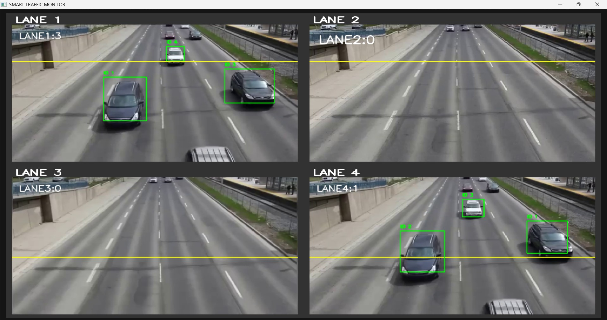
1. Multi-Camera Traffic Capture
Four cameras continuously capture live traffic from each lane. Video feeds are processed in real-time using OpenCV.
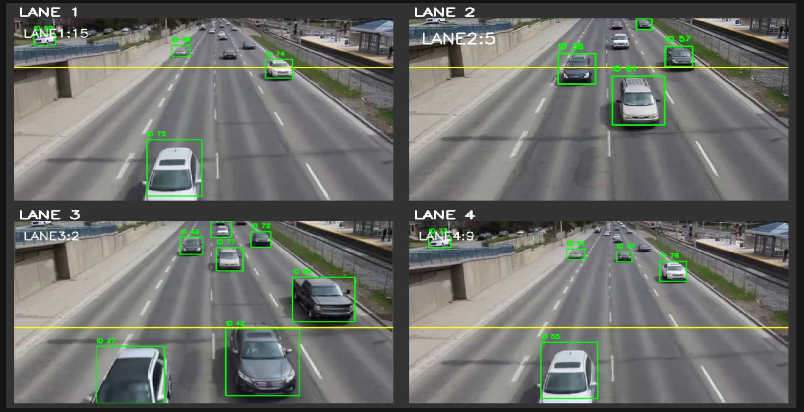
2. YOLOv8 Vehicle Detection & Tracking
YOLOv8 detects vehicles (cars, bikes, buses) and tracks them using unique IDs. Vehicles crossing counting lines are counted per lane.

3. Traffic Density Calculation
Vehicle counts are collected for a fixed time window. AI calculates traffic density and determines priority lanes dynamically.
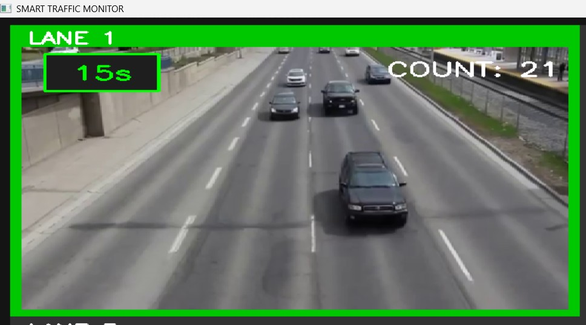
4. AI Signal Timing Control
Green signal duration is assigned based on vehicle count. Commands are sent from Python to Arduino via Serial communication.

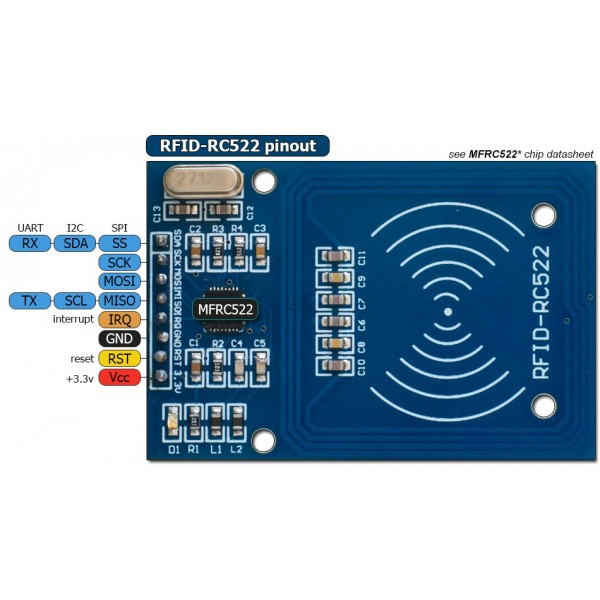
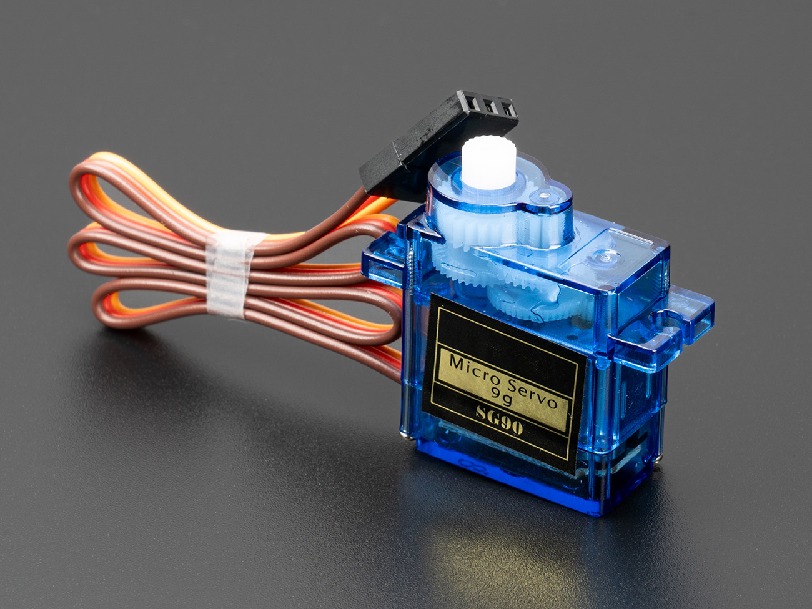
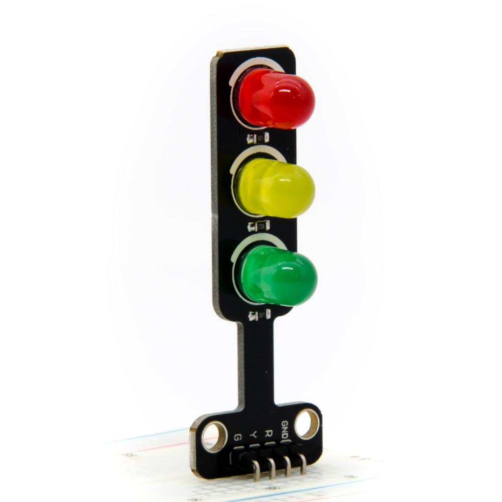
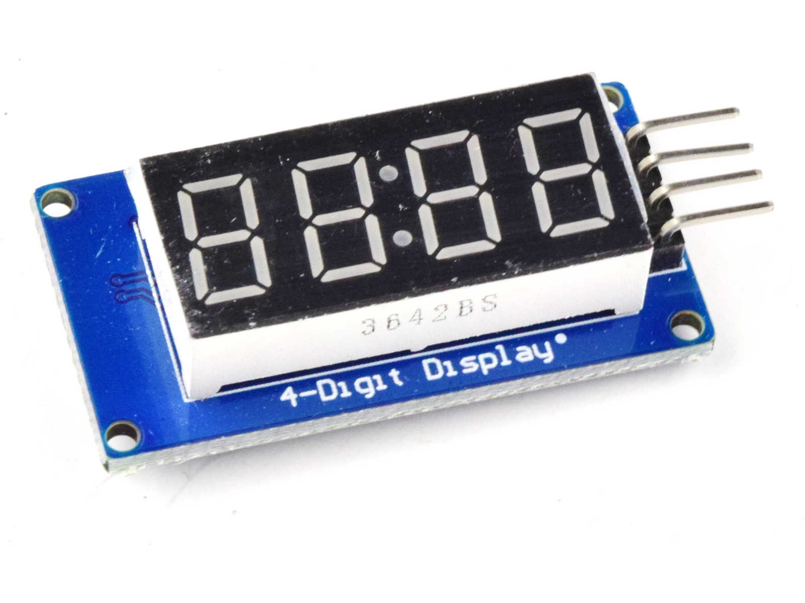
6. Hardware Integration
The system integrates multiple hardware components to control real-time traffic signals. Arduino Mega acts as the central controller connecting all modules.
- 🔧 Arduino Mega – Main controller
- ⚙ Servo Motors – Lane barrier control
- 🚦 Traffic LEDs – Signal indication
- 🔢 4-digit 7 Segment – Timer display
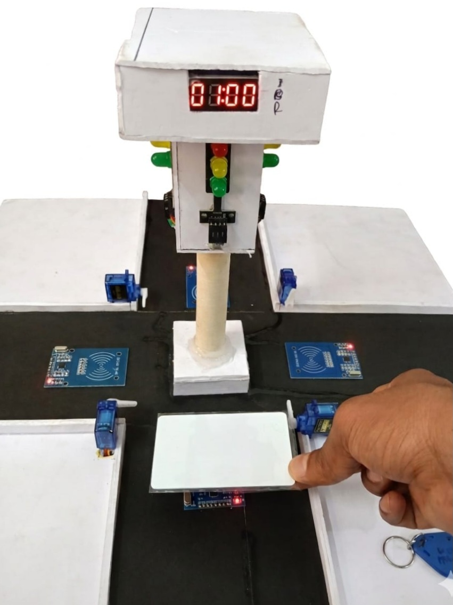
6. RFID Emergency Detection
RFID modules detect emergency vehicles. System instantly overrides signals and gives priority clearance.
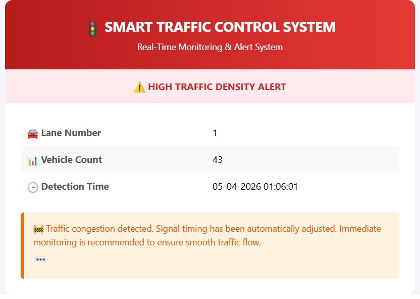
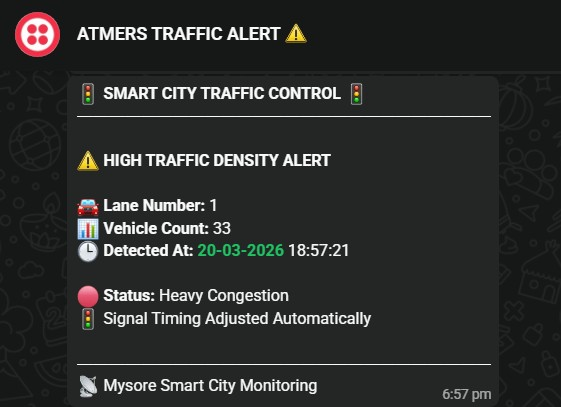
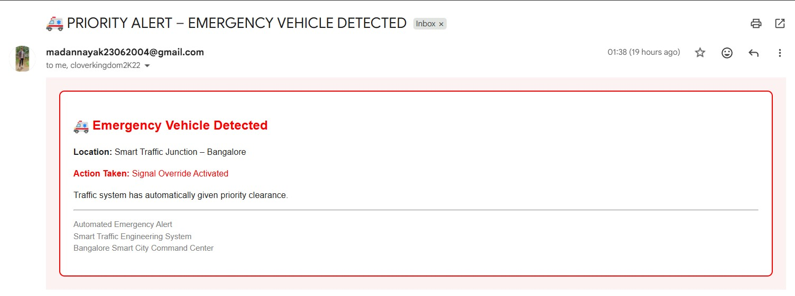
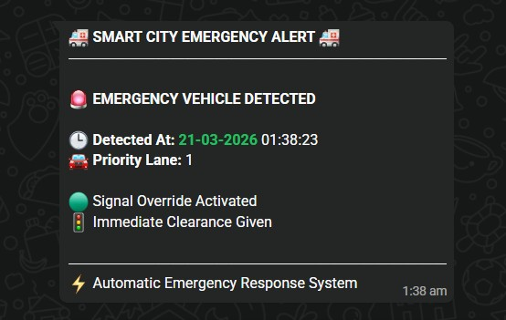
7. Alerts & Notifications
The system automatically sends real-time alerts for both traffic congestion and emergency situations. Notifications are delivered through Email and WhatsApp, ensuring instant communication to authorities.
- 📧 Normal Traffic Email Alert
- 📱 WhatsApp Congestion Alert
- 🚑 Emergency Email Notification
- 🚨 Emergency WhatsApp Alert
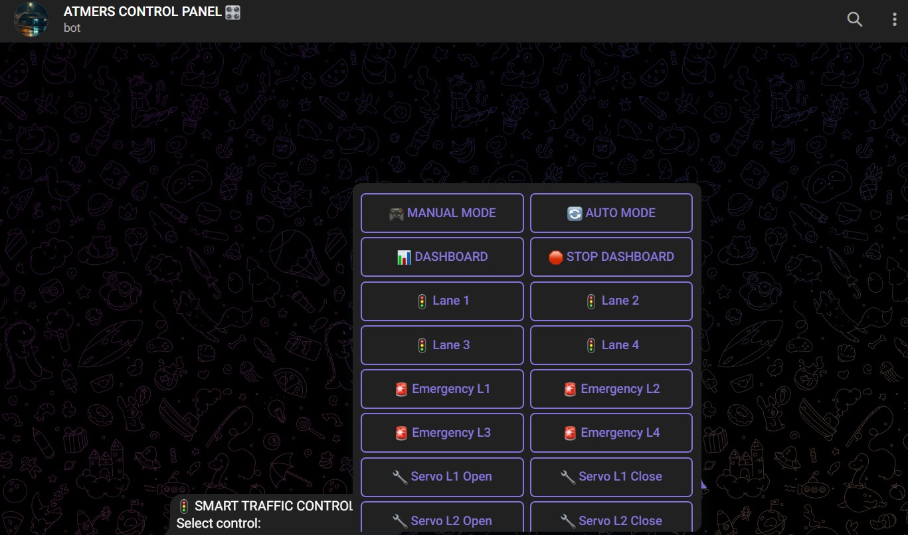
8. Remote Control via Telegram
User can manually control lanes, servos, and signals. Supports AUTO mode, MANUAL override, and emergency control.